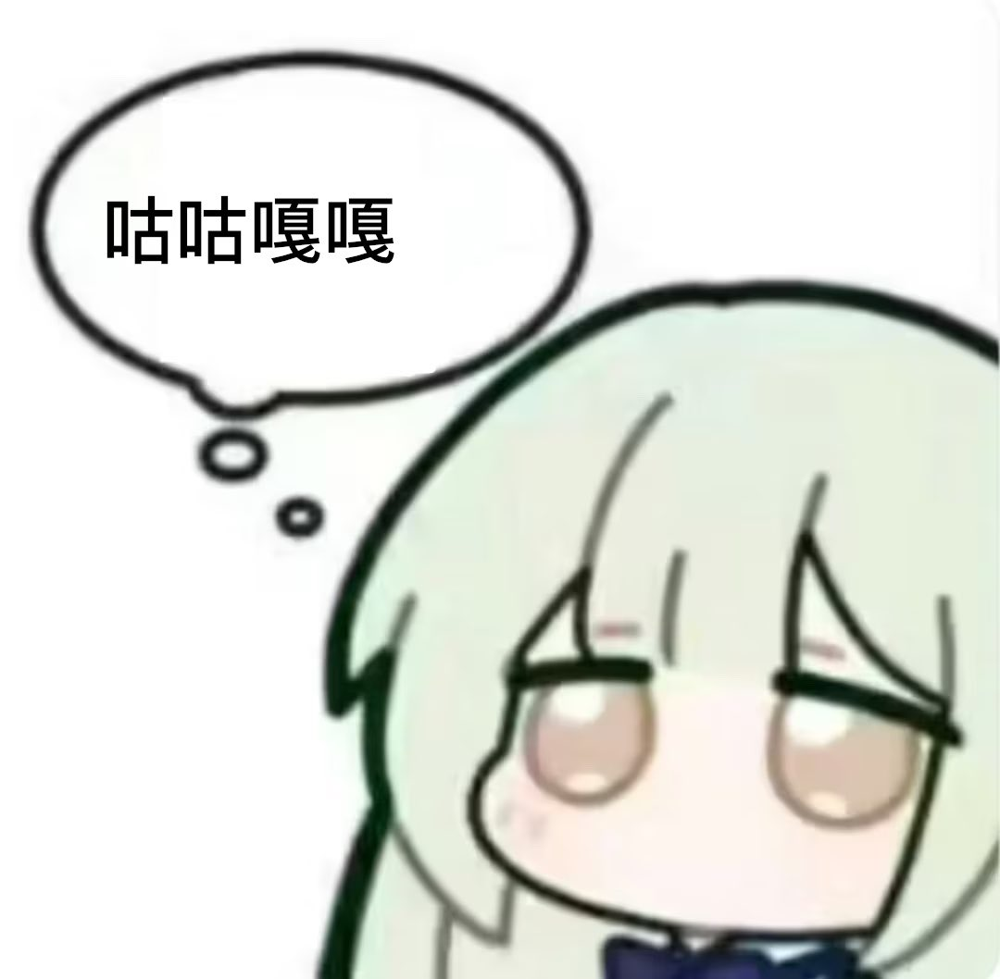

我真的有一个问题，各位觉得帐号应该是先去关互原始积累流量，再产出帐号内容，还是做自己喜欢的，慢慢吸收人，关互了一两百人，现在关注不涨也懒得去互关，刷推时看到一个画家庆祝400fo，画了一幅庆祝400fo的画，画中人物很开心阳光，去关互来的fo反而让人觉得不好意思庆祝fo多少多少，让人觉得在下水道生活，不想因为创作者收益而变成只会圈流量的人，但是这些关互如附骨之蛆说就是为了利益，为利这个理念根本没问题，但是我更想找可以聊天的朋友，不搬屎当然可以不搬屎，但那就没什么可发的了，我只能把自己学到的一些基础知识再拿出来讲，是真的很好奇太基础的东西有人看吗，之前b站up主因为电子扫盲，被盲＂网暴＂了，我也想搞搞类似电子扫育的文章😋
